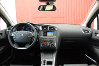
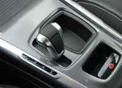
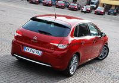
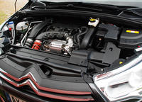

Chez Citroën, l'automobile allemande est un modèle. La nouvelle C4 prouve de manière magistrale le bond en avant technologique et qualitatif qu'a opéré la firme aux Chevrons. En attendant la DS4...
Monter à bord de la nouvelle Citroën C4, c'est comme voyager en terre inconnue. C'est en effet la première fois qu'une compacte française dégage un tel sentiment de qualité. D'ailleurs, si l'on avait supprimé l'identification du modèle, on aurait pu se croire au volant d'une allemande.
Les portières sont lourdes, les joints épais, les plastiques moussés plus que de raison... La nouvelle Citroën C4 fait oublier la planche de bord ratée de la génération précédente.
D'ailleurs, les progrès significatifs en finition se sont accompagnés d'une refonte totale du style, comme ce fut le cas pour la routière C5 lancée en 2008. Sauf qu'ici, l'ensemble est plus aéré et moins angoissant que sur la grande Citroën. Les claustrophobes seront heureux de l'apprendre.
Si la console centrale reste finalement de facture assez classique, la Citroën C4 fait preuve d'une certaine originalité en matière d'instrumentation, qui reprend un thème cher à la Citroën C5, qui n'est d'ailleurs pas sans rappeler une certaine… Toyota Auris ! Et rebelote pour le levier de vitesses des versions à boîte robotisée BMP6, qui s'inspire des modèles hybrides du numéro 1 japonais.
Cette ressemblance mise à part, ce graphisme n'apporte pas vraiment grand-chose en matière de lisibilité, voire se montre moins précis que les "aiguilles traditionnelles". A l'heure où les conducteurs d'aujourd'hui scrutent davantage leurs compteurs que la route, cette excentricité peut paraître de trop. On se consolera avec la possibilité de changer la couleur de ces aiguilles !
Une fois n'est pas coutume, Citroën n'a pas mis en avant les progrès en habitabilité lors de la traditionnelle conférence de presse. Malgré des cotes en hausse : + 5 cm en longueur (4,33 m) et + 2 cm en largeur (1,79 cm), la nouvelle Citroën C4 ne profite pas vraiment de ce léger embonpoint aux places arrière. L'espace aux jambes et aux coudes est dans la bonne moyenne sans plus. De plus, si les sièges sont très bien dessinés, ils sont beaucoup trop fermes à notre goût.
Si on ne peut masquer une légère déception en ce qui concerne l'habitabilité pour les passagers, on se console avec le coffre, qui est tout simplement le plus logeable de la catégorie, avec 408 litres (320 litres auparavant).
Alors que la firme aux chevrons s'est investie dans la réalisation de l'habitacle, elle est finalement restée plus sage à l'extérieur, en attendant la DS4. La nouvelle C4 est pour schématiser une grosse évolution statutaire de la précédente.
Mieux assise sur la route, elle perd un peu en arrondis, ce qu'elle gagne en assurance. On apprécie notamment son regard très personnel, sa calandre dynamique sans être proéminente et ses petites touches de chrome.
Nous sommes en revanche moins séduits par le traitement de la poupe, trop sage et par la —petite—taille des roues, qui semblent un peu perdues au milieu de ces flancs travaillés et de cette ceinture de caisse haute.
On ne change pas une équipe qui gagne ! Les trains roulants de la génération précédente sont repris sur la nouvelle Citroën C4, à quelques réglages près. On note —entre-autres— de nouveaux réglages d'amortisseurs, l'adoption d'une monte pneumatique inédite et le recalibrage des aides électroniques à la conduite.
En dépit de pneus taille basse (225//45R17) sur notre modèle d'essai en finition Exclusive, le confort de suspension de la C4 est à montrer en exemple. La Citroën absorbe la moindre irrégularité de très belle manière, sans pour autant que l'efficacité soit compromise, bien au contraire.
La Citroën C4 est une voiture qui peut être conduite vite, voire très vite, avec un grand sentiment de sécurité. D'ailleurs, elle embarque une panoplie d'équipements comme le très utile système de surveillance d'angle mort ou les projecteurs avec éclairage d'intersection.
Avec de telles qualités de confort et de tenue de route, les 150 ch du 2.0 HDI ne sont pas de trop. Cette dernière évolution du 4 cylindres Diesel va parfaitement à la nouvelle Citroën C4, d'autant que les efforts significatifs en insonorisation le rendent discret, même à froid et vitres fermées bien sûr.
Passé un petit creux à très bas régime, le couple généreux (340 Nm de 2.000 à 2.750 tr/min) donne des ailes à la Citroën C4.
Avec un seul conducteur à bord, la berline française est capable d'atteindre le 0 à 100 km/h en 8,6 secondes, un temps très flatteur qui s'explique par une masse limitée (moins de 1.4 tonne) et par un étagement de boîte ne favorisant pas "que" la consommation. Nous n'avons d'ailleurs guère excédé les 6 l. /100 km sur notre parcours scandinave.
Nous avons également eu l'occasion de prendre le volant de la version mue par le 2.0 THP essence de 156 ch. Très agréable, ce moteur n'est malheureusement disponible qu'avec la boîte pilotée BMP6, qui pâtit encore d'un fonctionnement trop saccadé.
Pour tenter de faire la différence avec les "vraies" allemandes, la nouvelle Citroën C4 fait le plein en équipements.
Notre version haut de gamme Exclusive embarque ainsi la sellerie cuir / tissu, les jantes alliage de 16 pouces, l'aide au stationnement avant et arrière, le système de surveillance d'angle mort, l'autoradio CD/MP3 etc... pour un tarif de 26.990 euros avec le "gros" 2.0 HDI de 150 ch.
Un millier d'euros supplémentaires par rapport à l'ancien modèle de 140 ch, à la dotation moins riche.
La grand force de la Citroën C4, c'est son confort et sa qualité de réalisation. Capable de lutter à armes égales avec les allemandes en finition, elle prend l'avantage au chapitre dynamique. Vivement nos prochains essais comparatifs !


{kind=link}
{kind=link}
{kind=link}
{kind=link}
{kind=link}
{kind=link}
{kind=link}
{kind=link}